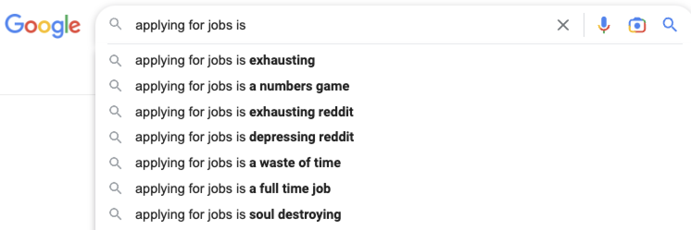
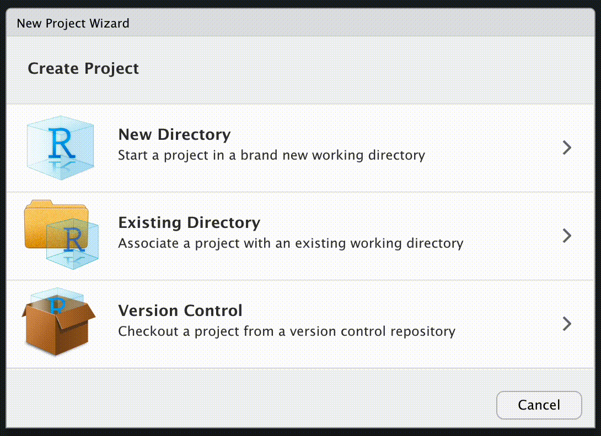
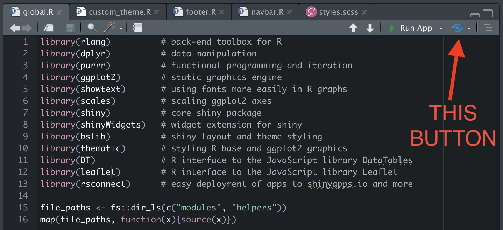
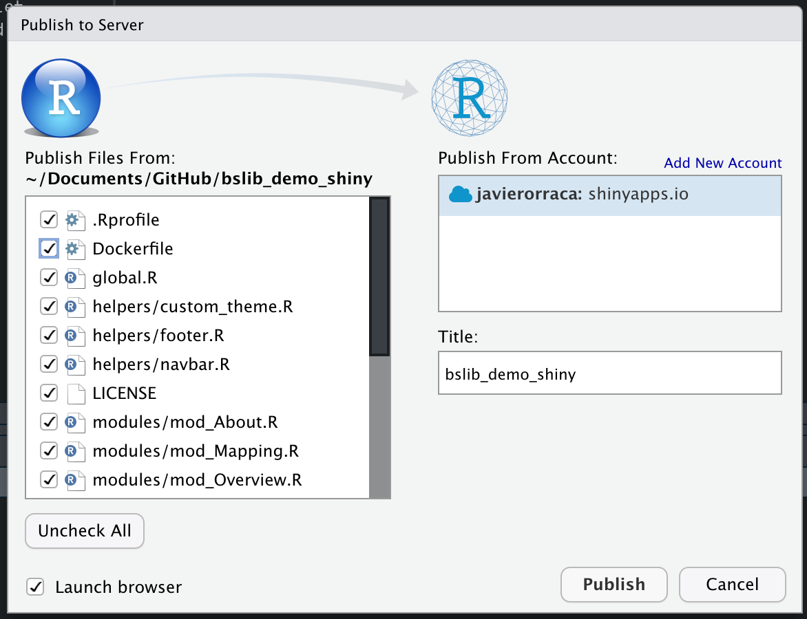
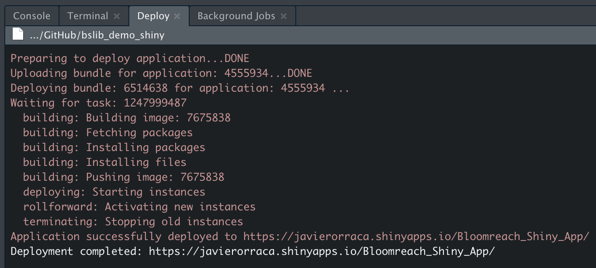

# Overarching bslib theme
fn_custom_theme <- function() {
bslib::bs_theme(
version = "4",
base_font = sass::font_google("Open Sans"),
bg = "#ffffff",
fg = "#1d2d42",
primary = "#f3d436",
secondary = "#1d2d42",
success = "#1d2d42") |>
bs_add_variables("border-bottom-width" = "6px",
"border-color" = "$primary",
.where = "declarations") |>
bs_add_rules(sass::sass_file("www/styles.scss"))
}
# Thematic theme for ggplot2 outputs
fn_thematic_theme <- function() {
thematic::thematic_theme(
bg = "#ffffff",
fg = "#1d2d42",
accent = "#f3d436",
font = font_spec(sass::font_google("Open Sans"), scale = 1.75)
)
}Shiny App Styling
shiny
github
bslib
docker
During my interview process with Bloomreach, I developed an interactive Shiny app styled with the Bloomreach branding and color scheme. This tutorial will help you do the same to demo the power of Shiny to prospective employers.
Background
If you Google Search “applying for jobs is,” you see auto-completion suggestions that feel about right…
Applying for jobs is both exhausting and a full-time job. Data scientists are expected to stay on top of their statistical education, have robust GitHub repositories, and they’re expected to know how to apply ever-changing technologies for DevOps and reproducible machine learning… And all this in addition to the endless resume and cover letter tweaks you’re probably making for each job (as you should).
If you’re an academic wanting to pivot to industry or a data scientist looking for a job change, I propose a simple (or simple-ish) solution to standing out from the crowd in a meaningful way: Build an easy-to-access web application for your future employers.
In July 2022, Travis Gerke held a presentation at rstudio::conf(2022) titled What They Forgot to Teach You About Industry Transitions from Academia (or “WTF-AITA” 😬). Travis presented my Shiny app as a “cover letter accessory” and it motivated me to write this tutorial such that anybody familiar with R, GitHub, and the RStudio IDE could deploy their own demo Shiny app for prospective employers.
Steps to Edit the App
To ensure a smooth installation, I recommend installing the latest version of R (4.2.2) and the latest version of the RStudio IDE. The underlying R scripts used on this Shiny app rely on the native pipe operator (|>) introduced in base R 4.1.0. If you do not have access to the native pipe, you will not be able to run the app without additional code tweaks, i.e., replacing all instances of the native pipe (|>) with the magrittr pipe (%>%).
Git for the R User
The next steps assume that you’re familiar with GitHub, you’ve installed R + Git + the RStudio IDE, and you’ve connected RStudio to GitHub. Jenny Bryan’s Happy Git and GitHub for the useR is a great resource if you’re stuck on any of these topics.
1: Clone Repo
We’ll start by forking this GitHub repo into your repository to allow you to experiment with my code without actually changing anything in my original project repo. To do this, navigate to my GitHub repo ( JavOrraca/bslib_demo_shiny) and click on the Fork button in the top-right of the repo. This will prompt you to “Create a new fork” - Typically, I like to keep all of the defaults intact. When you’re ready to create the new fork, simply hit the Create fork button on the bottom of the screen.
Assuming you kept the original repository name, you should see a newly created repo titled “bslib_demo_shiny” in your GitHub repositories. It contains a full copy of all files and folders found in my original project repo.
Next, you’ll want to clone this repo to your local machine. Using the RStudio IDE, navigate to its menu bar and click on File -> New Project -> Version Control -> Git, copy/paste your repo’s clone URL, choose your local project directory path of choice, and click on Create Project.
RStudio IDE’s New Project Wizard will launcn in a popup window after selecting New Project from the file menu. You should expect the following:

This process will create a local clone of all files and folders found on your remote GitHub repo. Once all files are downloaded for this project, the files and folder structure will look like this:
├── Dockerfile
├── LICENSE
├── README.md
├── bslib_demo_shiny.Rproj
├── global.R
├── helpers
│ ├── custom_theme.R
│ ├── footer.R
│ └── navbar.R
├── modules
│ ├── mod_About.R
│ ├── mod_Mapping.R
│ ├── mod_Overview.R
│ └── mod_Reports.R
├── renv
│ ├── activate.R
│ ├── library
│ │ └── R-4.2
│ ├── sandbox
│ │ └── R-4.2
│ ├── settings.dcf
│ └── staging
├── renv.lock
├── server.R
├── ui.R
├── www
│ ├── Shiny_Demo_Preview.png
│ ├── blr_logo-primary.png
│ └── styles.scss
2: Install Packages
It’s important to make note of the renv folder. This Shiny app relies on the renv package to manage project-package dependencies. If the Shiny app requires different package versions than those installed on your system’s main R library path, this approach will install the necessary packages in the renv directory.
To install the required R packages for this app, follow the instructions presented in your RStudio IDE Console immediately after cloning the GitHub repo or execute the command renv::restore(). This process will restore the package state as recorded in the renv.lock file - This “lockfile” records all of the R package names and versions required to run this specific Shiny app.
Once the project-package dependencies are installed, test launch the Shiny app by running shiny::runApp() in the Console or by clicking on the Run App button in the RStudio IDE. The Run App button only appears if you’re inside the global.R, ui.R, and server.R files - These three filenames are unique to Shiny and the RStudio IDE recognizes them as such.

3: App Customization
While there are many ways to configure a Shiny app, the global aesthetics of this app have been configured using the bslib and thematic packages. These packages provide tools for customizing Bootstrap themes and they introduce Sass variables to Shiny (in my opinion, making the customization process much more unified).
The default Bootstrap version for bslib is version 5, however, this app was designed using Bootstrap 4. The thematic package provides a centralized approach to certain R visualizations such as those generated from ggplot2.
To fully customize the appearance of the app to your liking, make revisions to the following files that are sourced at runtime:
helpers/custom_theme.R
This helper file creates two functions (fn_custom_theme() and fn_thematic_theme()) that are loaded into your global environment at runtime. Here you can specify base fonts, background (bg) and foreground (fg) colors, and other accent colors used throughout the Shiny app. The fn_custom_theme() function is called in line 3 of ui.R (in the app’s root directory) and the fn_thematic_theme() function is called in line 56 of modules/mod_Overview.R.
modules/About.R
This script defines the UI and Server functions used to render the About page on the Shiny app. Technically, the Overview, Mapping, Reports, and About pages of the Shiny app are tabs toggled with shiny::tabPanel(). Now that you’ve had some exposure to htmltools::HTML(), you should be able to revise the raw HTML in this script to build your own About page. It’s fairly straightforward so I won’t show this module in a code chunk - Please reach out to me directly or in the comments section you have any questions.
4: Example Tweaks
Now that we’ve covered the files in your Shiny project that need to be updated if you want to deploy your own custom-styled demo Shiny app, let’s pivot to a real world example. Let’s say our name is Steve Wozniak and we want to design a Shiny app that invokes a retro Apple feel… After finding a decent logo to use and saving it to www/retro_apple_logo.png, below are the steps that we would need to follow to update our app:
helpers/custom_theme.R- Line 5:
base_font = sass::font_google("Press Start 2P", local = FALSE, display = "swap"), - Line 8:
primary = "#01c700", - Line 22:
accent = "#01c700",
- Line 5:
helpers/footer.R- Line 4:
"This web app demo was developed by <a href='http://www.woz.org/'>Steve Wozniak</a> with R + Shiny"
- Line 4:
helpers/navbar.R- Line 3:
class = "retro_apple", - Line 4:
a(href = "http://www.apple.com/", - Line 5:
img(src = "retro_apple_logo.png", - Line 6:
title = "Apple")
- Line 3:
Let’s give this app a test run and see how it changed the appearance:

So far, so good! We’ve got a retro logo (re-sized to fit in the top-left of the navbar), a retro font (pulled from Google Fonts), and the primary and accent colors have been updated from yellow to neon green. There are several additional edits we could make but for now, I like it.
5: App Deployment
Now we’re ready to publish your newly revised Shiny app. We’ll use the shinyapps.io platform by Posit to push-button deploy our app from the RStudio IDE. For our needs, a free account will suffice as the free tier allows up to 5 Shiny app deployments with a combined 25 monthly active hours of usage. It’s important to note that if someone launches your app and keeps it running in a tab, this is considered “active” runtime, so encourage your shinyapps.io users to close the browser window when they’re done using your app.
If you do not have a shinyapps.io account or you have not synced your RStudio IDE to shinyapps.io via security token, please review the shinyapps.io Getting Started documentation. Once you’re set up, it will be a breeze to publish your app. If you’re stuck, again feel free to reach out to me directly.
Similar to the way that the Run App button will present itself if you’re inside the global.R, ui.R, or server.R files, you’ll also see a blue sync-looking button that gives you the power of push-button deployment from within the RStudio IDE:

Clicking that button will open a new window to help you publish your app to the shinyapps.io servers. The title you select will be the name of the application on your shinyapps.io dashboard and it will also be included in the URL of your app. For example, I named my app “Bloomreach_Shiny_App” so the URL to visit my app is https://javierorraca.shinyapps.io/Bloomreach_Shiny_App/.

If you use a title that already exists in your shinyapps.io dashboard, you will force overwrite the prior app with the same name, so take caution when publishing. More often than not, it’s desired to overwrite an app so that you can regularly push updates to production to the same URL, however, there are instances where this behavior would not be desired. Regardless of your publishing intention, RStudio IDE will provide a warning to confirm that you want to write over a shinyapps.io application with the same name.
Since the Dockerfile is not relevant to this project deployment, I recommend unchecking Dockerfile from the list of file from which to publish. Once you’re ready, click on Publish and a new tab, Deploy, will be visible in the bottom-left of your RStudio IDE. This process takes several minutes since shinyapps.io will 1) install an R image with all the project-package dependencies needed to run your Shiny app, and 2) build and deploy the Shiny app itself. Once publishing is complete, you should see something like this:

6: Git Commit & Push
Now that you’ve successfully published your application from the RStudio IDE, wrap up your changes and commit / push them back to your GitHub repo. There are several ways to do this (GitHub Desktop app, Terminal, Windows Powershell, etc.) but I’ve found the easiest to be within the RStudio IDE. First, you’ll want to commit (or save) a local snapshot of the edits you’ve made from the remote GitHub repo. Since this commit is saved locally, you’ll also need to push this commit back to your GitHub repo.
Under the Git pane, click on Commit to open a window that allows you to inspect the files that were modified, added, deleted, etc. The quickest way to stage all files for commit is to click on any of the filenames you editted in the top-left pane of the commit popup window, select all files using the Select All keystroke (Ctrl+A on Windows or Cmd+A on Mac), then click on the Stage button. Write a message in the blank top-right message box for this commit - Keep it succinct about the file(s) changes that you’ve made. Click on the Commit button under the message box and this saves a local snapshot of the changes you’ve made.
To push the changes back to GitHub, click on the green Push button in the top-right of the commit window and this will push your locally committed changes to your remote GitHub repo. Now, in addition to the live app that you’ve deployed, you’ll also be able to direct end users to your GitHub repo with your app’s source code.
Recap & Next Steps
It didn’t feel like it but if you’re newer to Shiny, we did a lot! Let’s recap everything we ran through in this tutorial:
- From GitHub, you forked my original project repo to your account
- You cloned your remote GitHub repo to your local machine using the RStudio IDE
- You used the
renvpackage to install specific package versions as recorded on therenv.locklockfile - You customized the Shiny app by tweaking files in the
helpers/andmodules/folders - You deployed your app to shinyapps.io from the RStudio IDE
- You pushed your changes back to your public GitHub repo so others can easily review your source code
You’ve done a lot! If you’re stuck on any of the above, please do reach out either on LinkedIn, or Twitter, or by using the Comments section below this post. I won’t go into details of Docker on this blog post but in the future, I’d like to make a follow-up post to show you how to build your own Docker image from the Dockerfile and push it to a public Docker Hub repo… With this approach, you have many more options for deploying your Shiny apps on
Shiny Session Info
R version 4.2.2 (2022-10-31)
Platform: aarch64-apple-darwin20 (64-bit)
Running under: macOS Ventura 13.0.1
Matrix products: default
LAPACK: /Library/Frameworks/R.framework/Versions/4.2-arm64/Resources/lib/libRlapack.dylib
locale:
[1] en_US.UTF-8/en_US.UTF-8/en_US.UTF-8/C/en_US.UTF-8/en_US.UTF-8
attached base packages:
[1] stats graphics grDevices datasets utils methods base
other attached packages:
[1] rsconnect_0.8.28 leaflet_2.1.1 DT_0.26 thematic_0.1.2.1
[5] bslib_0.4.1 shinyWidgets_0.7.4 scales_1.2.1 showtext_0.9-5
[9] showtextdb_3.0 sysfonts_0.8.8 ggplot2_3.3.6 purrr_0.3.5
[13] dplyr_1.0.10 rlang_1.0.6 shiny_1.7.3
loaded via a namespace (and not attached):
[1] tidyselect_1.2.0 splines_4.2.2 lattice_0.20-45
[4] leaflet.providers_1.9.0 colorspace_2.0-3 vctrs_0.5.0
[7] generics_0.1.3 htmltools_0.5.3 yaml_2.3.6
[10] mgcv_1.8-41 utf8_1.2.2 later_1.3.0
[13] pillar_1.8.1 jquerylib_0.1.4 glue_1.6.2
[16] withr_2.5.0 lifecycle_1.0.3 munsell_0.5.0
[19] gtable_0.3.1 fontawesome_0.4.0 htmlwidgets_1.5.4
[22] memoise_2.0.1 labeling_0.4.2 fastmap_1.1.0
[25] httpuv_1.6.6 crosstalk_1.2.0 fansi_1.0.3
[28] Rcpp_1.0.9 xtable_1.8-4 renv_0.16.0
[31] promises_1.2.0.1 cachem_1.0.6 jsonlite_1.8.3
[34] mime_0.12 farver_2.1.1 fs_1.5.2
[37] digest_0.6.30 grid_4.2.2 cli_3.4.1
[40] tools_4.2.2 magrittr_2.0.3 sass_0.4.2
[43] tibble_3.1.8 pkgconfig_2.0.3 Matrix_1.5-1
[46] ellipsis_0.3.2 rstudioapi_0.14 R6_2.5.1
[49] nlme_3.1-160 compiler_4.2.2